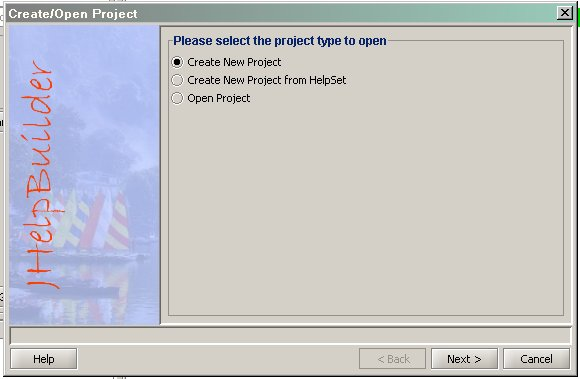
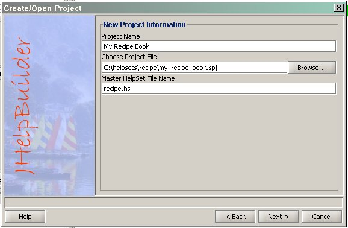
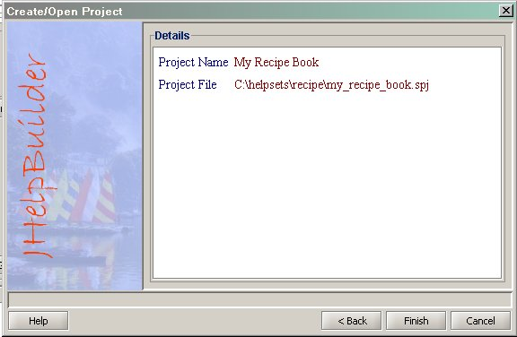

- Choose File -> New/Open Project menu.
- Select the "Create New Project" option and click "Next".
- 
-
Enter a name for the project. [My Recipe Book]
Enter a project file name. You can use the Browse button to select a file. It is recommended that you use a new directory for each project. [c:\helpsets\recipe\my_recipe_book.spj]
Enter a name for master helpset file. The file is created in the same directory as the project. [recipe.hs]
Click "Next"
- 
-
The information you entered is displayed. You can go back and change any value. Click "Finish" to create the project.
- 
Next: Add files to the project directory